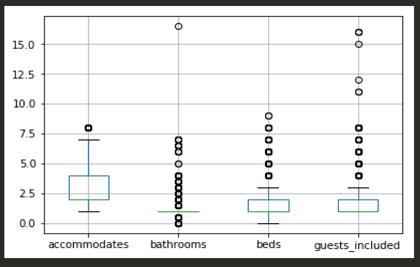
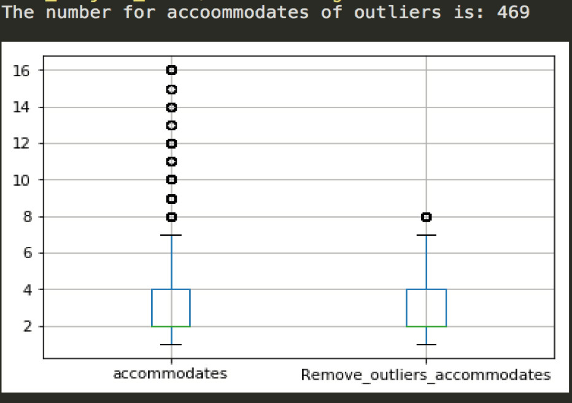

By
Weile Chen
In
Project Part 2
Category
Data & Analysis
Basic Statistical Analysis
Box plot below shows some results of outliers.
Here, mean and standard deviation method is used to detect and remove outliers. Specifically, if rows contain value of each attributes exceed the range from mean-3*standard deviation to mean+3*standard deviation for each variable, they are removed. Removing outliers may make the prediction more accurate. For example, below box plot shows the range of accommodates before and after removing outliers.

In terms of hotel prices data set, the hotel prices are binned together based on the zip code and taken mean. The new variable is the mean of hotel prices based on zip code.
To analyze the categorical variables, first they are converted into dummies variables. Then, a heat map was made that shows the correlation coefficients between these variables. If the variables showed strong correlation with the price, they were kept. For instance, the variable ‘room_type’ has 3 values, which are Entire home/apt, Private room, and Shared room respectively. The figure below shows the correlation between them and the price.

From the figure above, Entire home/apt with value 0.48 has a positive relation with the price, whereas the Private room with value -0.46 has a negative relation with the price. In this case, this categorical variable is kept. On the contrary, other categorical variables that have a little impact on the price are dropped.